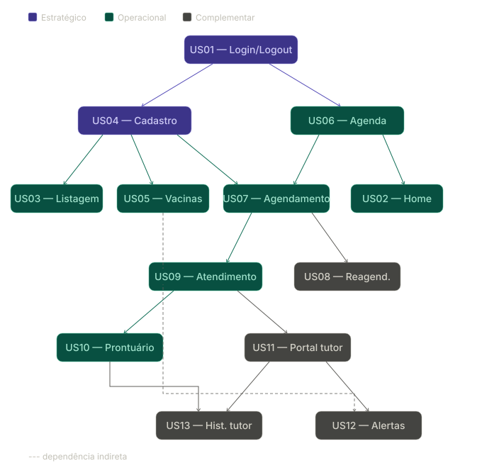

Planejamento e Priorização do Backlog
Metodologia de Escolha: ICE Scoring
O grupo optou pelo método de priorizaçao ICE (Impact, Confidence, Ease) para estabelecer uma hierarquia objetiva de desenvolvimento. Esta metodologia permite equilibrar o valor entregue ao negócio com a viabilidade técnica, garantindo que o esforço da equipe seja alocado nos itens de maior retorno para o negócio.
A pontuação é calculada pela fórmula: $\(Score = Impacto \times Confiança \times Facilidade\)$
Definição dos Critérios
- Impacto: Mensura o quanto a funcionalidade é vital para o funcionamento da clínica.
- 10: Essencial para a existência da operação (sem ela, o sistema é inutilizável).
- 1: Melhoria mínima e que não afeta o fluxo principal de trabalho.
- Confiança: Define o grau de clareza dos requisitos e a certeza técnica da implementação.
- 10: Requisitos detalhados, sem incertezas técnicas ou de negócio.
- 1: Ideia abstrata com alto risco de mudança ou necessidade de muita pesquisa.
- Facilidade: Avalia a simplicidade de desenvolvimento e o tempo de entrega.
- 10: Tarefa simples, de implementação rápida e baixo esforço.
- 1: Alta complexidade técnica, exigindo longo tempo de desenvolvimento e muitos recursos.
Matriz de Prioridade
Para a organização das sprints, as histórias foram classificadas conforme os seguintes intervalos de score:
| Faixa de Score | Classificação | Descrição Estratégica |
|---|---|---|
| 500 a 1000 | Estratégico | Alta prioridade. Itens indispensáveis para o lançamento do MVP. |
| 200 a 499 | Operacional | Prioridade média. Itens necessários ao MVP, mas não prioritários. |
| 1 a 199 | Complementar | Baixa prioridade. Itens que podem complementar o MVP. |
Os intervalos de classificação (Estratégico, Operacional e Complementar) foram definidos pela equipe com base no score máximo possível (10 × 10 × 10 = 1000), distribuído em três faixas proporcionais.
Tabela de Priorização com Pesos (ICE)
| ID | História de Usuário | Impacto | Confiança | Facilidade | Score Final | Classificação | Depende de |
|---|---|---|---|---|---|---|---|
| US01 | Acesso ao Sistema (Login/Logout) | 10 | 10 | 9 | 900 | Estratégico | — |
| US05 | Cadastro de Paciente e Tutor | 10 | 10 | 7 | 700 | Estratégico | US01 |
| US09 | Registro de Atendimento Clínico | 10 | 9 | 5 | 450 | Operacional | US05, US07 |
| US07 | Criação de Novo Agendamento | 9 | 9 | 5 | 405 | Operacional | US05, US06 |
| US04 | Listagem e Busca de Pacientes | 7 | 10 | 5 | 350 | Operacional | US05 |
| US06 | Visualização da Agenda Diária | 8 | 8 | 5 | 320 | Operacional | US01 |
| US11 | Histórico Clínico Unificado | 8 | 9 | 4 | 288 | Operacional | US09 |
| US02 | Painel Inicial (Home) | 7 | 7 | 5 | 245 | Operacional | US01, US06 |
| US03 | Dashboard Gerencial (Gráficos) | 6 | 8 | 5 | 240 | Operacional | US02, US09 |
| US10 | Emissão de Receituário Clínico | 7 | 9 | 4 | 252 | Operacional | US09 |
| US12 | Gerenciamento de Exames Anexados | 6 | 8 | 5 | 240 | Operacional | US09 |
| US13 | Resumo de Atendimento por IA | 5 | 7 | 4 | 140 | Complementar | US09 |
| US14 | Dashboard do Tutor | 5 | 6 | 5 | 150 | Complementar | US05, US09 |
| US15 | Alertas e Recomendações (Care) | 4 | 5 | 3 | 60 | Complementar | US14 |
| US16 | Histórico Completo Visão Tutor | 4 | 6 | 4 | 96 | Complementar | US14, US11 |
| US08 | Cancelamento e Reagendamento | 6 | 8 | 2 | 96 | Complementar | US07 |
Grafo de Dependências entre Histórias

Planejamento dos MVPs
Visão Geral
O desenvolvimento foi distribuído em 3 MVPs incrementais ao longo de 12 semanas, organizados em ciclos de aproximadamente 4 semanas cada. Cada MVP entrega um conjunto funcional e testável, permitindo validação incremental antes de avançar para o próximo ciclo.
MVP 1 — Base Operacional da Clínica
Período: Semanas 1 a 4
Objetivo: Entregar o núcleo do sistema — acesso seguro, cadastro de pacientes e controle de agenda. Ao final deste ciclo, a clínica já consegue autenticar usuários, cadastrar animais e tutores, e visualizar e criar agendamentos.
| ID | História de Usuário | Classificação | Prioridade no ciclo |
|---|---|---|---|
| US01 | Acesso ao Sistema (Login/Logout) | Estratégico | 1ª — base de tudo |
| US05 | Cadastro de Paciente e Tutor | Estratégico | 2ª — depende de US01 |
| US06 | Visualização da Agenda Diária | Operacional | 3ª — depende de US01 |
| US04 | Listagem e Busca de Pacientes | Operacional | 4ª — depende de US05 |
| US07 | Criação de Novo Agendamento | Operacional | 5ª — depende de US05 e US06 |
Resultado esperado: Ao fim deste ciclo, é possível autenticar, cadastrar um paciente com seu tutor, visualizar a agenda do dia e registrar um novo agendamento.
MVP 2 — Atendimento Clínico e Histórico
Período: Semanas 5 a 8
Objetivo: Adicionar o módulo de prontuário e atendimento clínico, com seu histórico, receita, além do painel inicial gerencial.
| ID | História de Usuário | Classificação | Prioridade no ciclo |
|---|---|---|---|
| US09 | Registro de Atendimento Clínico | Operacional | 1ª — depende de US05 e US07 |
| US11 | Histórico Clínico Unificado | Operacional | 2ª — depende de US09 |
| US10 | Emissão de Receituário Clínico | Operacional | 3ª — depende de US09 |
| US02 | Painel Inicial (Home) | Operacional | 4ª — depende de US01 e US06 |
| US03 | Dashboard Gerencial (Gráficos) | Operacional | 5ª — depende de US02 |
| US12 | Gerenciamento de Exames Anexados | Operacional | 6ª — depende de US09 |
Resultado esperado: Ao fim deste ciclo, é possível realizar toda a rotina laboratorial do médico: consultar, registrar histórico, imprimir receita, guardar exame, ver o gráfico do dia analítico gerencial.
MVP 3 — Portal do Tutor e Funcionalidades Complementares
Período: Semanas 9 a 12
Objetivo: Entregar o portal do tutor e funcionalidades de retenção do paciente.
| ID | História de Usuário | Classificação | Prioridade no ciclo |
|---|---|---|---|
| US14 | Dashboard do Tutor | Complementar | 1ª — depende de US05 e US09 |
| US08 | Cancelamento e Reagendamento | Complementar | 2ª — depende de US07 |
| US16 | Histórico Completo Visão Tutor | Complementar | 3ª — depende de US14 e US11 |
| US15 | Alertas e Recomendações (Care) | Complementar | 4ª — depende de US14 |
| US13 | Resumo de Atendimento por IA | Complementar | 5ª — depende de US09 |
Resultado esperado: Ao fim deste ciclo, o ecossistema está perfeito: Tutor checa vacinas remotamente, IA facilita a visão da recepção, e é permitido cancelar e repor retornos clínicos.
Referências
- ICE Scoring Model | Definition and Overview — ProductPlan.
- What is the ICE Scoring Framework? Guide and Template — Savio.
- Build your MVP efficiently with agile methodology — Imaginary Cloud.
Histórico de Versões
| Versão | Data | Descrição | Autor | Revisor |
|---|---|---|---|---|
| 1.0 | 27/03/2026 | Criação do documento | Taynara Vitorino | |
| 1.1 | 29/03/2026 | Inclusões e unificações e priorização | Equipe |